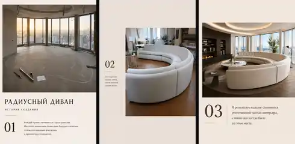
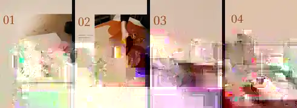
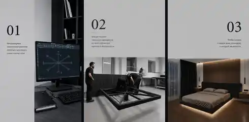

Сложная геометрия
Радиусные и эркерные диваны под конкретное пространство — крупные формы вне стандартного ассортимента.
ОТ ИДЕИ ДО РЕАЛИЗАЦИИ · STORYTELLING ПРОИЗВОДСТВА
Визуальная серия показывает три типа индивидуальной работы: сложную геометрию, натуральную кожу и инженерные решения под интерьер.
ИСХОДНЫЕ МАТЕРИАЛЫ
Четыре реальные фотографии производства и готовых изделий. Это вся исходная визуальная база серии.

ЗАДАЧА
Не перечислять технологии, а наглядно показать, какие нестандартные задачи фабрика может решить для конкретного интерьера.
Радиусные и эркерные диваны под конкретное пространство — крупные формы вне стандартного ассортимента.
Ручной раскрой и индивидуальная работа с материалом для сложных форм.
Кровать, подсветка и стеновая панель под размеры стены, тумбы и электрику.
ВИЗУАЛЬНАЯ СЕРИЯ
Каждая последовательность связывает проектирование, реальный производственный этап и понятный финальный образ.
Геометрия под пространство.

Индивидуальная работа с материалом.

Конструкция, свет и архитектура стены.

В серии — 4 реальные фотографии. Остальные сцены созданы, чтобы связать исходные материалы в последовательный визуальный рассказ.
РЕЗУЛЬТАТ
Дизайнер видит не только готовую мебель, а возможность спроектировать форму, материал и конструкцию под конкретное пространство.
ДРУГИЕ КЕЙСЫ ОТУТТО